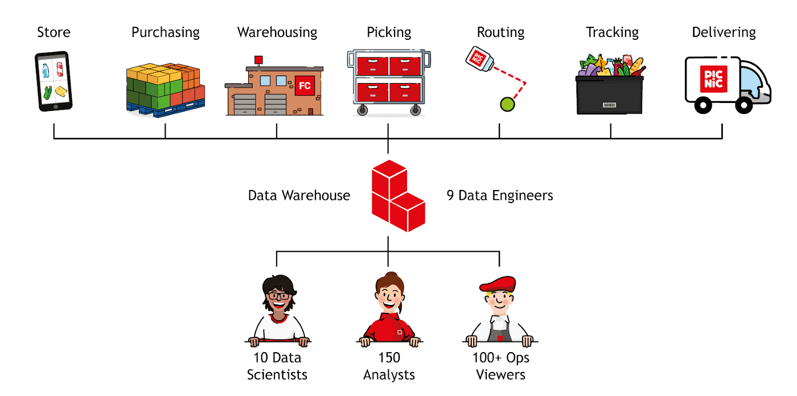
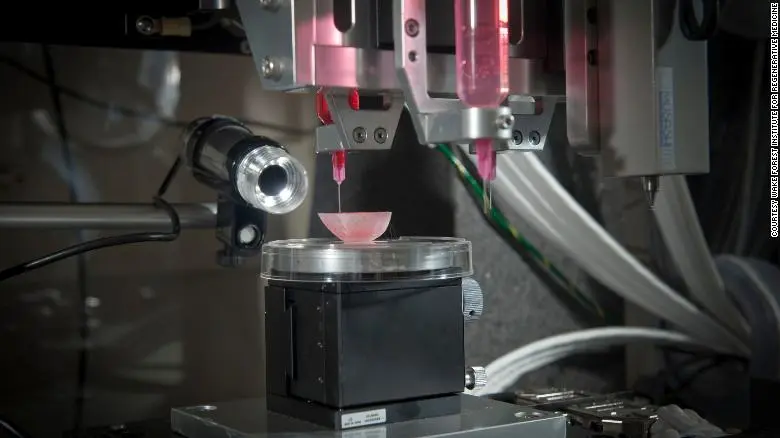

.sebastian mathiasen
Temas en discusión
Mi lugar de trabajo
Mi acercamiento a este estilo de tecnologías es mi lugar de trabajo, Picnic. Aquí pude encontrar información sobre su funcionamiento así como el manejo de su database.
 Picnic’s Lakeless Data WarehouseAplicacion de Algoritmos para Gobiernos
Algo que suma importancia en nuestros tiempos es la capacidad de resolver problemas con grandes bases de datos, por esto los invito a leer este artículo de Wikipedia que nos invita a una alternativa diferente.
Government by algorithm¿Cuándo podremos imprimir órganos en 3D y quién tendrá acceso a ello?
¿Qué pasaría si los médicos pudieran simplemente imprimir un riñón, utilizando células del paciente, en lugar de tener que encontrar un donante compatible y esperar que el cuerpo del paciente no rechace el riñón trasplantado?
 CNN Medicina